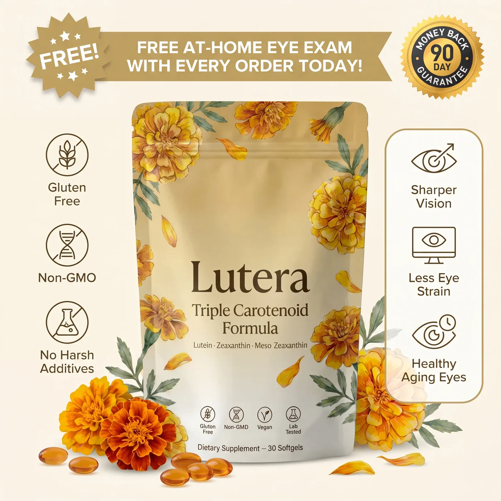
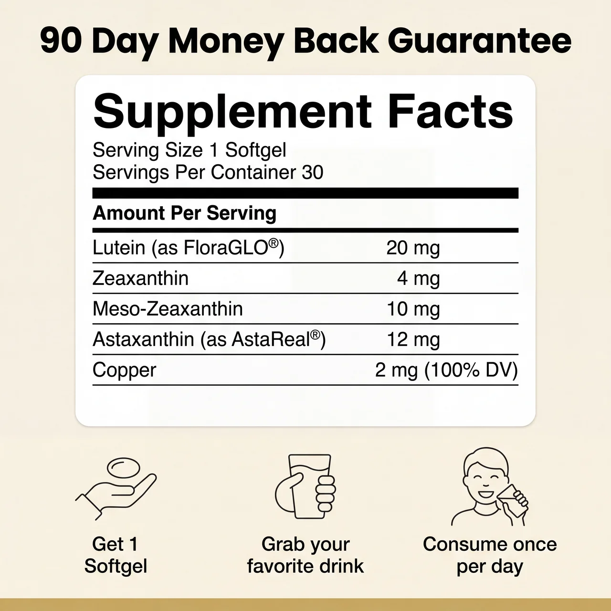
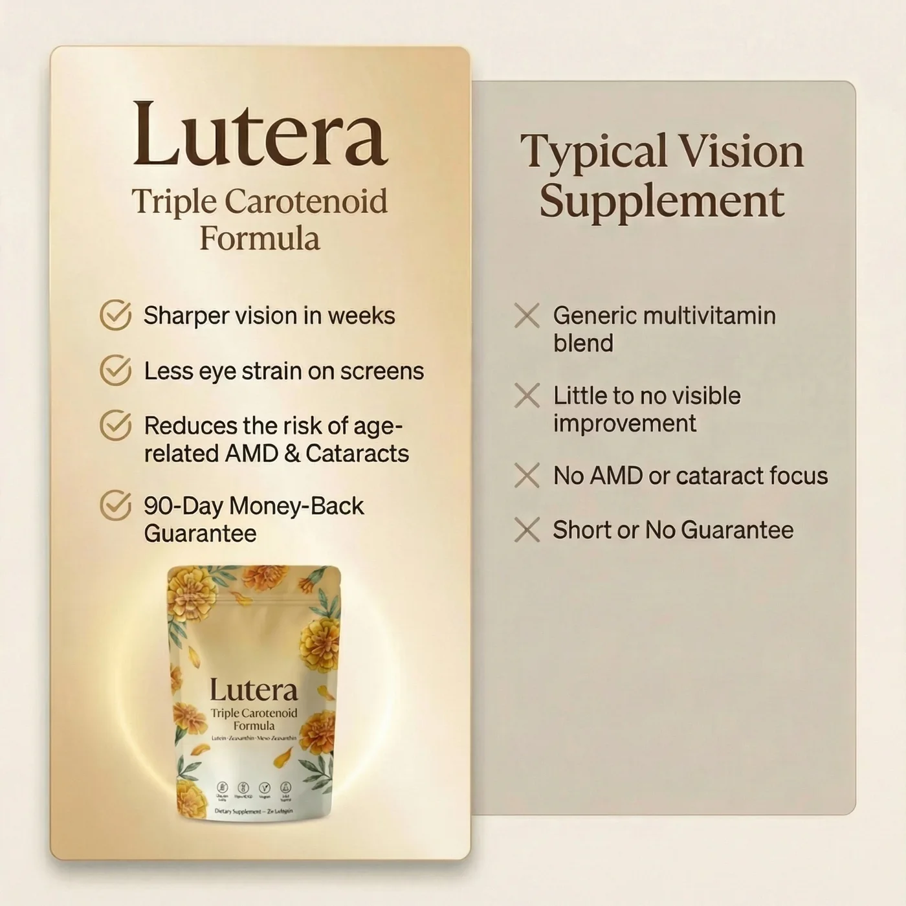
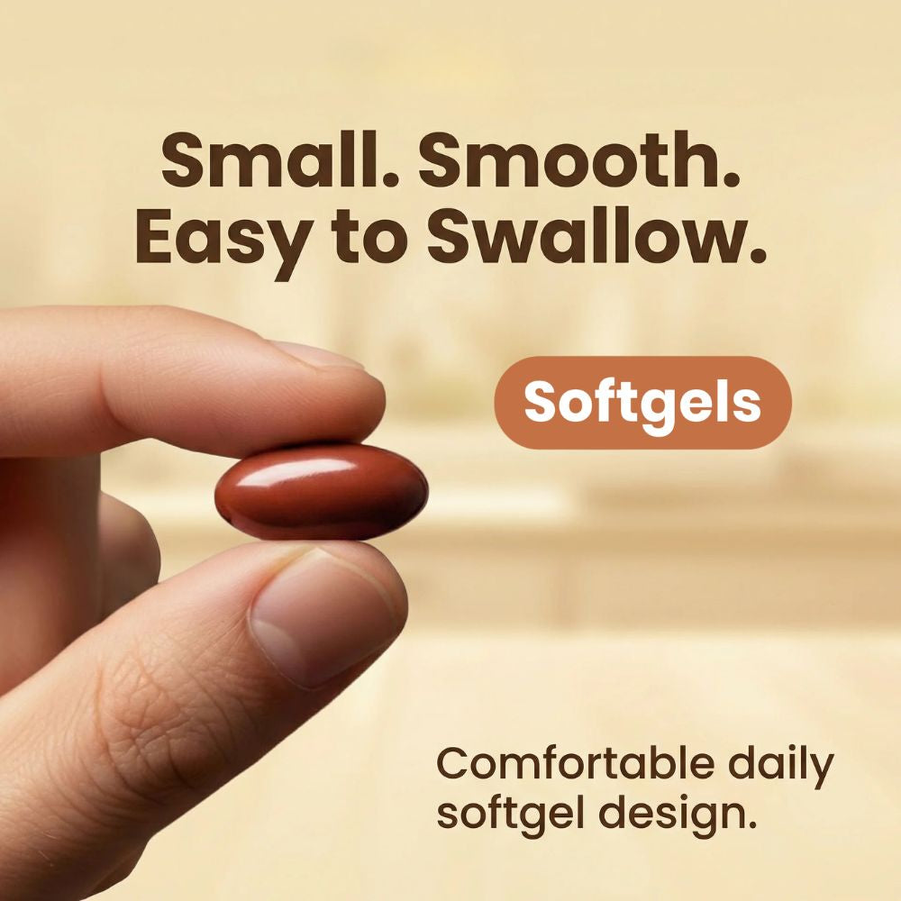
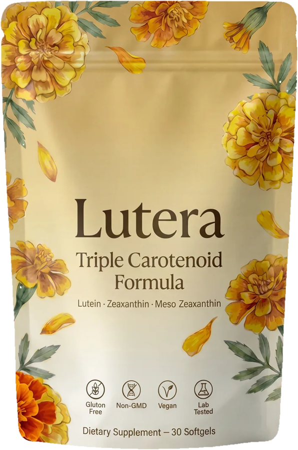
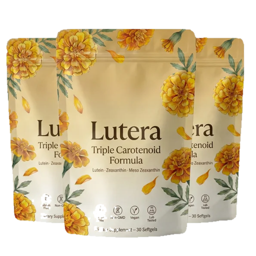
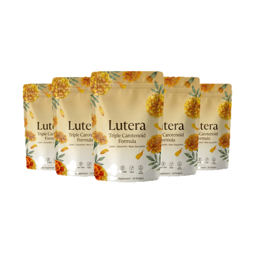
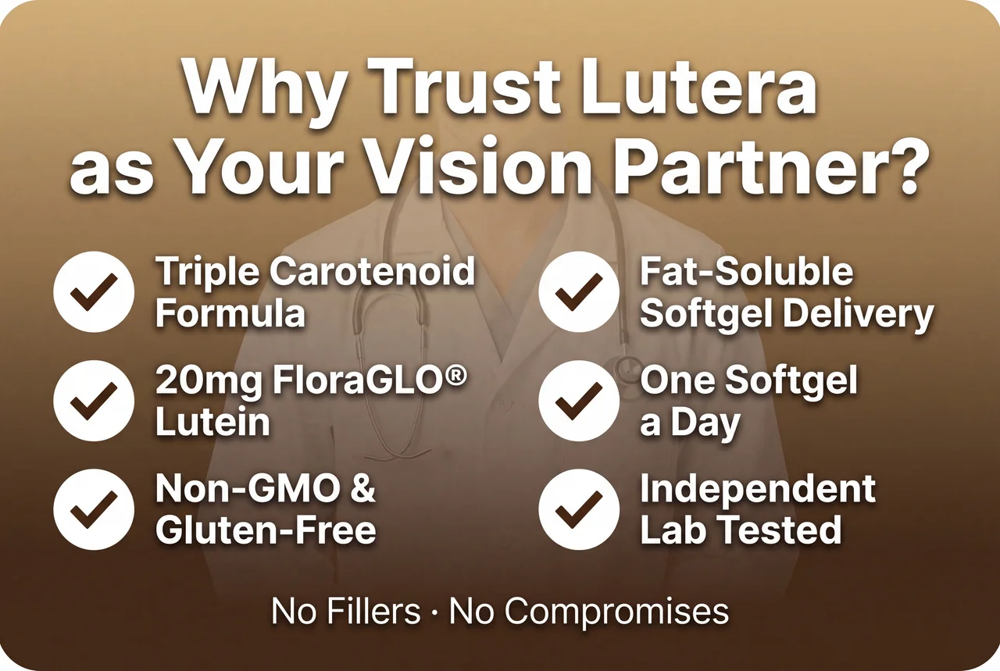
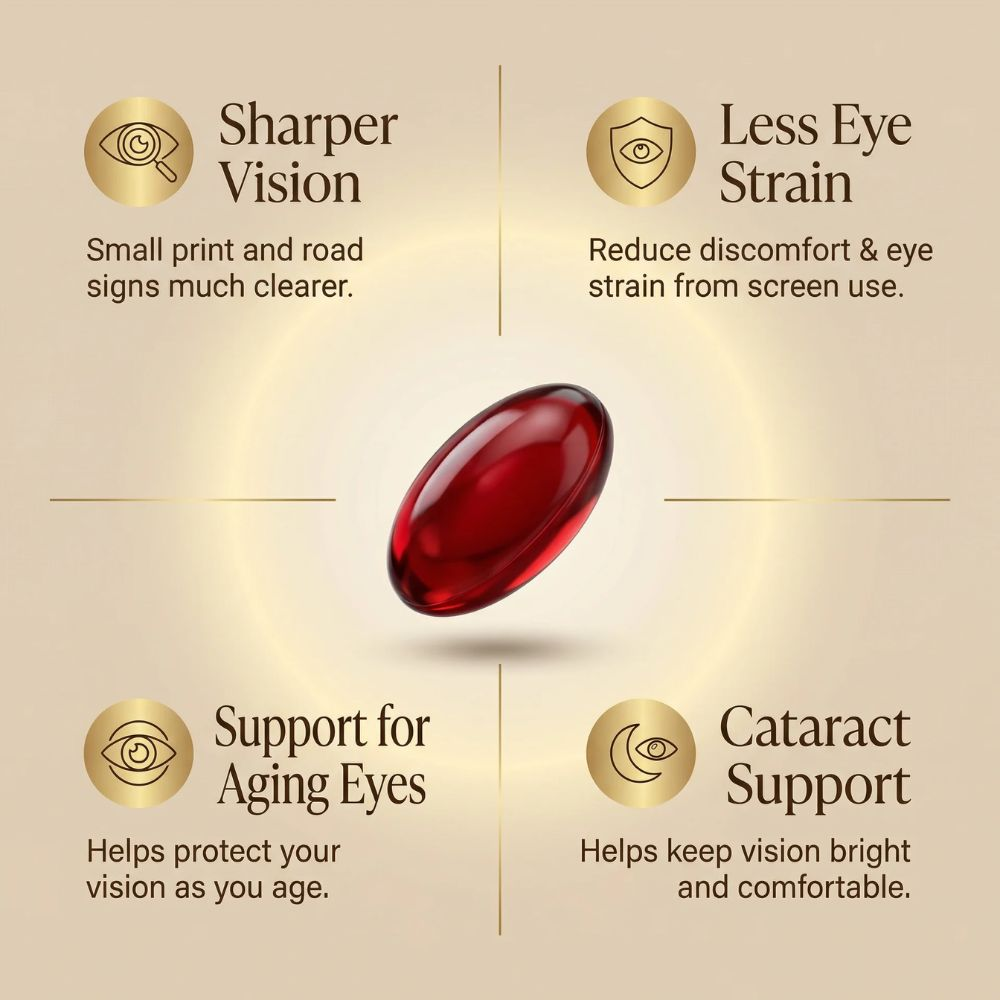

Shop Now and Get Up To 73% Off







“I didn’t tell my optometrist I’d started anything new. At my checkup she said my numbers looked better than last year and asked what changed. When I showed her the Lutera label, she said keep going.”
Lutein, Zeaxanthin, and Meso-Zeaxanthin are the three carotenoids your macular pigment is made of, and among the most-studied nutrients in eye health. Combined with Astaxanthin, Lutera supports visual clarity, contrast, and comfort under bright light and heavy screen use.*
Lutein 20mg (FloraGLO®) · Zeaxanthin 4mg · Meso-Zeaxanthin 10mg · Astaxanthin 12mg (AstaReal®) · Copper 2mg. Carried in an oil-based softgel for absorption. Gluten-free, Non-GMO, vegan-friendly, no artificial fillers.
Carotenoids are fat-soluble — taken as dry pills, much of the dose is never absorbed. Lutera's softgel delivers them with oil so they reach your bloodstream, and your eyes, instead of passing through. One softgel with your first meal of the day.
Most customers describe the first shift within 2–4 weeks — usually less end-of-day eye fatigue. Deeper support builds over 6–8 weeks of daily use. That's why the 90-day supply is our most popular option.
Try Lutera for 90 days. If you're not satisfied, contact support for a full refund — no forms, no hoops, no hassle.

Switching from a basic drugstore eye vitamin to Lutera made a visible difference. My eyes feel fresher and reading is easier than it's been in years.
Linda K. ★★★★★After trying product after product, one softgel a day from Lutera finally gave me the steady, comfortable eyes I'd given up hoping for.
Robert W. ★★★★★I wake up clearer now, screen time doesn't drain me the way it used to, and my eyes stay comfortable from the first hour to the last.
Gary M. ★★★★★My checkups have been better since I made the switch, and at my last visit my optometrist wanted to know exactly what I'd been taking.
Carol B. ★★★★★The tired, heavy feeling that used to define my evenings has leveled out, and for the first time in years my eyes feel genuinely rested.
Susan H. ★★★★★Switching from a basic drugstore eye vitamin to Lutera made a visible difference. My eyes feel fresher and reading is easier than it's been in years.
Linda K. ★★★★★After trying product after product, one softgel a day from Lutera finally gave me the steady, comfortable eyes I'd given up hoping for.
Robert W. ★★★★★I wake up clearer now, screen time doesn't drain me the way it used to, and my eyes stay comfortable from the first hour to the last.
Gary M. ★★★★★My checkups have been better since I made the switch, and at my last visit my optometrist wanted to know exactly what I'd been taking.
Carol B. ★★★★★The tired, heavy feeling that used to define my evenings has leveled out, and for the first time in years my eyes feel genuinely rested.
Susan H. ★★★★★Switching from a basic drugstore eye vitamin to Lutera made a visible difference. My eyes feel fresher and reading is easier than it's been in years.
Linda K. ★★★★★After trying product after product, one softgel a day from Lutera finally gave me the steady, comfortable eyes I'd given up hoping for.
Robert W. ★★★★★I wake up clearer now, screen time doesn't drain me the way it used to, and my eyes stay comfortable from the first hour to the last.
Gary M. ★★★★★My checkups have been better since I made the switch, and at my last visit my optometrist wanted to know exactly what I'd been taking.
Carol B. ★★★★★The tired, heavy feeling that used to define my evenings has leveled out, and for the first time in years my eyes feel genuinely rested.
Susan H. ★★★★★Each softgel delivers Lutein 20mg (FloraGLO®), Zeaxanthin 4mg, and Meso-Zeaxanthin 10mg — the three carotenoids your macula is actually made of. Most brands include one, at a fraction of the dose.
Research points to meaningful daily amounts, taken consistently. One Lutera softgel delivers them — no handful of capsules, no powders to mix, no guesswork.
One of nature's strongest antioxidants, studied for eye fatigue from screen use. It's the premium ingredient nearly every other eye formula skips.
Every batch is independently tested for purity — because you deserve to know exactly what you're putting in your body. Non-GMO, gluten-free, vegan-friendly, zero fillers.
From dependable daily support to simple daily use, here's what sets Lutera Triple Carotenoid Formula apart.
You've probably seen supplements that promise everything and change nothing. Lutera Triple Carotenoid Formula is formulated differently — clinically studied ingredients, a delivery system your body can actually use, and a clean formula built for every day.
Lutein, Zeaxanthin, and Meso-Zeaxanthin concentrate in your macula, where they support clarity and contrast. The key is dose and absorption — Lutera delivers studied amounts in an oil carrier, so the support is real, not theoretical.
×No powder, no chalky tablet. Lutera is a smooth oil-based softgel that goes down easy and stays that way — no aftertaste, no digestive discomfort, even on an empty stomach.
×Astaxanthin 12mg (AstaReal®) has been studied for visual fatigue from screen use — the modern strain most eye formulas ignore entirely. It’s the ingredient you feel at the end of a long day.
×Fat-soluble nutrients need fat to absorb — basic biology. Lutera’s oil-based softgel is the carrier that ensures the studied doses make it into circulation rather than going to waste.
×★★★★★
Honest experiences with Lutera's Triple Carotenoid Formula

Your macula — the tiny center of your retina responsible for sharp, detailed vision — is built from Lutein, Zeaxanthin, and Meso-Zeaxanthin. Your body cannot manufacture them; they must come from what you consume, and modern diets fall short while screen-heavy life demands more. Lutera restocks all three daily, plus Astaxanthin, in an oil-based softgel your body can actually absorb.*
Lutein and Zeaxanthin are nutrients your eyes already use every day — found naturally in spinach, kale, and eggs. Lutera delivers them consistently, at meaningful levels, without sugar, fillers, or artificial additives. One smooth softgel a day, gentle on the stomach, no aftertaste. If you take prescription medication, check with your doctor first — good practice with any supplement.
Most eye supplements are generic multivitamins with token amounts of the nutrients that matter, pressed into dry tablets your body struggles to absorb. Lutera is the opposite: a focused triple-carotenoid formula at studied doses, plus Astaxanthin 12mg, in an oil-based softgel that solves the absorption problem. Add the free At-Home Eye Exam to track your progress and a 90-day guarantee that removes the risk.
See how a focused triple-carotenoid softgel compares to generic eye pills and sugary gummies.
| Other Brands | ||
|---|---|---|
| Lutein + Zeaxanthin + Meso-Zeaxanthin | ✓ | ⊘ |
| Astaxanthin 12mg Included | ✓ | ⊘ |
| Oil-Based Softgel Delivery | ✓ | ⊘ |
| No Sugar | ✓ | ⊘ |
| Easy Daily Routine | 1 Softgel | 3 pills |
| Free At-Home Eye Exam | ✓ | ⊘ |
| 90-Day Money-Back Guarantee | ✓ | ⊘ |
Transparency matters when it comes to daily supplements. Below you'll find clear answers to the most common questions about Lutera — and what makes it different from other eye supplements.
Nearly all eye supplements are multivitamins with a token amount of Lutein in a dry tablet — minimal dose, minimal absorption. Lutera is a focused formula: Lutein 20mg, Zeaxanthin 4mg, Meso-Zeaxanthin 10mg, and Astaxanthin 12mg in an oil-based softgel your body can genuinely absorb.
Pharmacy eye vitamins typically skip Meso-Zeaxanthin and Astaxanthin entirely and press low doses into dry tablets. The difference in formulation and bioavailability is significant — each Lutera softgel delivers studied doses in a form built to absorb.
Most people tolerate carotenoids well — they're food-derived nutrients. But if you take prescription medication or manage a health condition, have a conversation with your doctor before you start. That's good practice with any new supplement.
Comfort improvements tend to show up first, usually within the first 2–4 weeks of consistent use. Deeper support takes longer; plan for 6–8 weeks before drawing conclusions. That's why the 90-day supply is our most popular option.